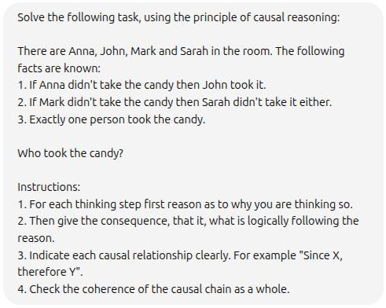

Inside 4000 cutting-edge papers on Prompt Engineering.
This article is a concise transcription of this Youtube video.
The comprehensive study of 4000 papers was done by experimenting with Claude, ChatGPT and OpenRouter. A total of 600$ (January 2025) was spent.
The following are the most useful concepts that were extracted from these studies.
Role-Based Prompting
It's important to not only specify the role, but a specific role that can help with the problem at hand.
For example, we do not prompt: "You are a mathematician." but "You are an expert in linear algebra."
Extension of this would be a MoE (mixture of agents), where the task is split in different steps and each step is assigned to a specific agent role.
Example:

CauCoT (Causal Chain of Thought)
Classic CoT example:

Causal CoT takes the classic approach a step further. Instead of relying on the model to create the steps it will go through, you are providing the steps to the model.
Example:
